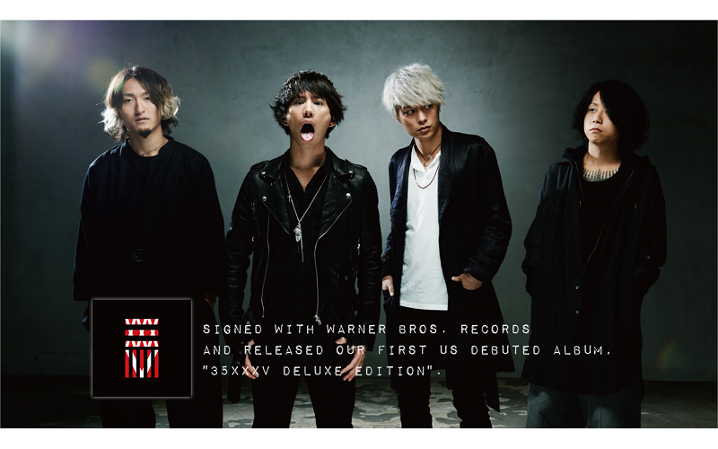
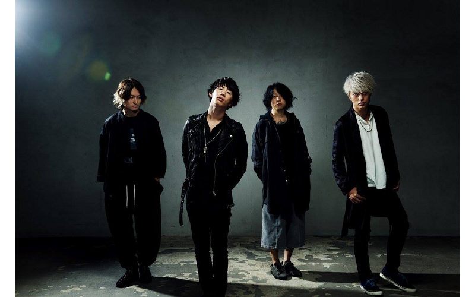
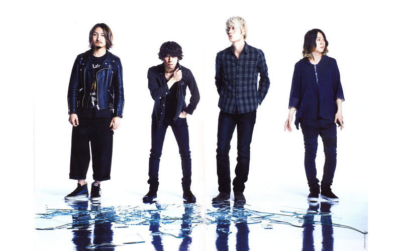

ONE OK ROCK（日語：ワンオクロック），是一個日本搖滾樂團，成立於2005年。由Taka、Toru、Ryota、Tomoya、Alex五人組成的搖滾樂團(Alex於2009離團後為四人樂團)。團名多以全大寫表示。
NICKNAME
Position
Full Name
Birthday
One Ok Rock (stylized as ONE OK ROCK) is a Japanese rock band formed in 2005, composed of Taka, Toru, Ryota, and Tomoya.

The band name "ONE OK ROCK" is changing from "one o'clock". Since the band members were secondary students, they could only practice at weekends. Usually the practice started at 01:00 of Sunday and ended in the morning. Base on pronunciation of japanese, pronounce of "R" and "L" are same, and change "O'clock" to "OK", "ONE OK ROCK" become the name of band.
「ONE OK ROCK」的名稱由來是「one o'clock」。因為剛開始他們練習時是高中生，而只有周末才可以練習，通常他們從週六半夜一點(即週日凌晨一點)開始到早上。由於日本人的發音，「R」與「L」的發音相同，並且將「O'C」改成「OK」而成了他們的團名。

The music style of ONE OK ROCK is different with other japan rock band, more than half of the lyrics of their song are English but not japanese, and pronounce of vocal TAKA is so correct that people can't tell that English from a japanese singer.
第一次聽ONE OK ROCK的人，大概不少都誤以為他們是哪個歐美樂團。本身熱愛美式搖滾、工作人員也有許多外國人，因此OOR的歌曲中時常夾雜大量英文，主唱TAKA標準的發音幾乎讓人聽不出歌曲出自日本樂團之手。英文歌詞和無違和感的發音讓聽不懂日文的人也可以易聽易懂易記，吸引許多平常不接觸日本音樂的歌迷對他們也抱持高度興趣，大眾普遍接受度高也讓他們不少歌曲擁有傲人成績。像是人氣抒情曲《Wherever you are》長年停留KKBOX日語單曲榜上，至今更拿下202次冠軍（紀錄繼續推進中），亮眼成績讓天王天后級歌手都得閃邊站。
Their songs have chosen to be theme song of video games and moive, like "The Beginning" of moive 《るろうに剣心》 and "Nothing helps" of game "Devil May Cry 5". They are working hard to expend their area to countries except Japan, they have tours around the world these years, and always feats in songs of other singers or band, for example, "SUMMER PARADISE" of USA band "Simple Plan" and "Dreaming Alone" of USA band "Against The Current". Which represented how popular they are nowdays.
他們的歌被選擇作為電影和遊戲的主題曲。而且他們近年在日本之外不同的國家也有演唱會，更與不同的樂隊和歌手合作，更能突顯他們的知名度。

ONE OK ROCK's basic influences were Good Charlotte and Ellegarden, the group's initial idea began when Toru wanted to start a rock band and invited Ryota to form a rock band. Good Charlotte influences are seen on their first album. After the scandal of Alex Onizawa groping a high school student, the band decided to continue without Alex.
In their sixth album Jinsei×Boku=, they expressed how this album was influenced by Linkin Park's and Coldrain's screaming and yell-rapping. Their new seventh album 35XXXV, was produced along with producer John Feldmann whom also worked with 5 Seconds of Summer, The Used, and Sleeping With Sirens. The album was described as "too Americanized" by international fans, yet it managed to get the first place on the Oricon Album weekly ranking being the first time the band achieved the first place. Fans are in constant dispute over their dynamic music style change as new albums release different sounds. However, many remain loyal to their power of producing great music regardless of what type of music they produce.
ONE OK ROCK一直被樂隊Good Charlotte和Ellegarden影響著。OOR的組隊原因是因為隊長Toru想要組一個樂隊，所以他邀請了Ryota一起合作。在OOR的第一張專輯便可看見樂隊Good Charlotte對他們的影響。而在Alex Onizawa偷摸高中學生的醜聞之後，OOR便決定不再跟他合作。
在OOR的第六張專輯Jinsei×Boku=便可看見樂隊Linkin Park's 和 Coldrain's對他們的影響，如他們在,歌曲內使用了尖叫和呼喊饒舌。另外，在OOR的第七張專輯35XXXV，他們與製作人John Feldmann及樂隊5 Seconds of Summer，The Used和 Sleeping With Sirens一起合作，所以該專輯被國際粉絲形容為”過份美國化”的專輯。雖然如此，該專輯仍然拿到Oricon Album weekly ranking的第一名，讓OOR第一次拿到第一名。另外，粉絲們也因為他們新的專輯有比以前不同的音響而不斷爭執不下著他們的音樂風格有強烈的變化。但是，不論他們生產什麼類型的音樂，仍然有很多人會忠於他們，只因他們有著偉大的音樂的力量。